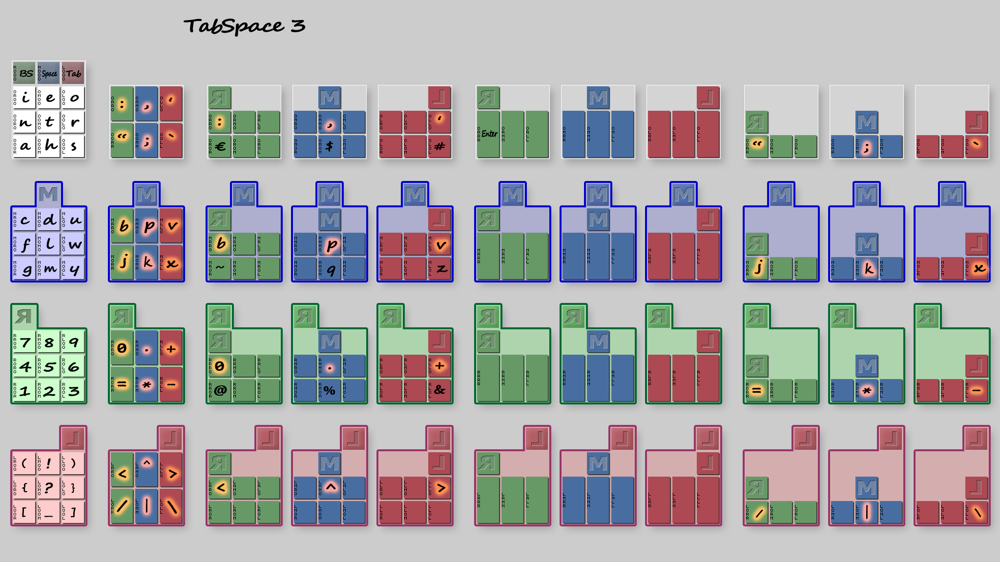
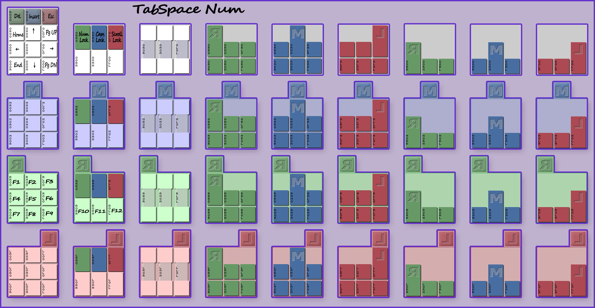
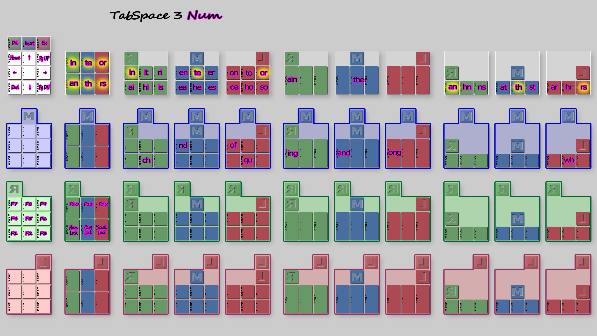
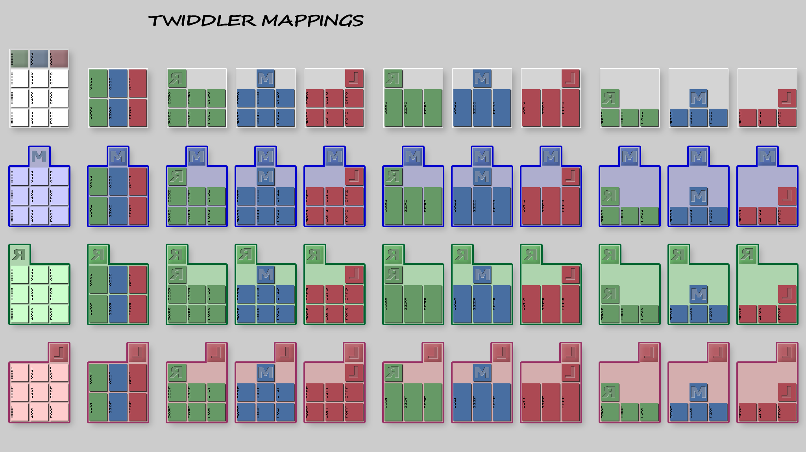
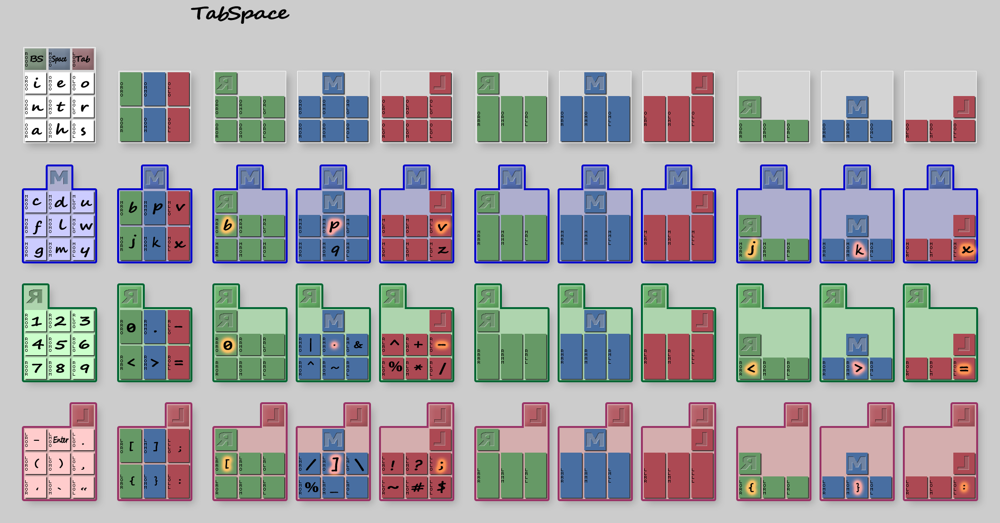
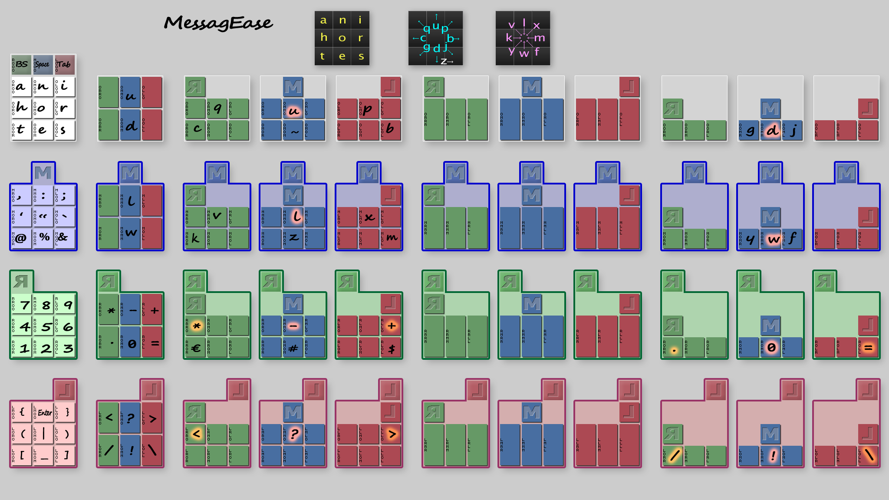

Twiddler3-layout
Twiddler 3 - TabSpace chording customization
Looking into a chorded-keyboard layout standard
Why should we learn some chording layout that makes sense only to the author? A better idea would be to take a part in the build process. And if it's too late, having a chance to read the story is the next best way to get the idea.
Every single decision should be clearly justified to avoid having to keep tabs on unclear points requiring further explanation. This is not quite the case in the TabSpace Guide by Brandon Craig Rhodes, the original author of what stands for a standard layout of this device.
A systematic study of all the Supported Layout combinations should help to define some grouping rules that would replace simply good-looking patterns. The empirical evaluation of the most efficient key assigment is a key point of this theoretical approach.
As a result, some Twiddler 3 Layout illustration of some practical rows and columns mapping could be used as a base for further analysis or experimentation.
In the end, these rules should make sense when dissecting a variety of Cheat Sheets .
Brandon Craig Rhodes http://www.rhodesmill.org/brandon
Version 0.3, Monday 15 November 1999
May be shared and modified if credited
The TabSpace Twiddler Key Assignments (PNG)
...
original PDF document
# The three top buttons map to the most frequently used keys. Note
# that in sane command line environments (those that support
# completions), tab is used nearly as much as backspace and both are
# often used many times per line (so we make them more convenient than
# a carriage return).
0 r000 = BACKSPACE
0 m000 = " "
0 l000 = TAB
# Next are the nine most common letters, which can each be produced
# with a single keypress. They are carefully arranged so that the
# most common combinations of them can be pressed simultaneously to
# produce double letters. In each case the double letter combinations
# output their two constituent letters in the most common order
# (though with some such as er-re it was a close call). The doubles
# can be expected to account for roughly one-third of the adjacent
# letter pairs in normal English text!
0 0m00 = "e"
0 00m0 = "t"
0 000m = "h"
0 0l00 = "o"
0 00l0 = "r"
0 000l = "s"
0 0r00 = "i"
0 00r0 = "n"
0 000r = "a"
0 0r0r = "ai"
0 0r0m = "hi"
0 0r0l = "is"
0 0rr0 = "in"
0 0rm0 = "it"
0 0rl0 = "ri"
0 0m0r = "ea"
0 0m0m = "he"
0 0m0l = "es"
0 0mr0 = "en"
0 0mm0 = "te"
0 0ml0 = "er"
0 0l0r = "oa"
0 0l0m = "ho"
0 0l0l = "so"
0 0lr0 = "on"
0 0lm0 = "to"
0 0ll0 = "or"
0 00rr = "an"
0 00rm = "hn"
0 00rl = "ns"
0 00mr = "at"
0 00mm = "th"
0 00ml = "st"
0 00lr = "ar"
0 00lm = "hr"
0 00ll = "rs"
# Every other letter is produced by pressing the top middle button
# (the spacebar) and some combination of the lower keys. It is
# expected that during normal typing the index finger will stay on the
# spacebar. A few combinations that involve these second-tier letters
# are also supported.
0 mm00 = "d"
0 m0m0 = "l"
0 m00m = "m"
0 mr00 = "c"
0 m0r0 = "f"
0 m00r = "g"
0 ml00 = "u"
0 m0l0 = "w"
0 m00l = "y"
0 mmm0 = "p"
0 m0mm = "k"
0 mrr0 = "b"
0 m0rr = "j"
0 mll0 = "v"
0 m0ll = "x"
0 mm0m = "q"
0 ml0l = "z"
0 mlr0 = "of"
0 mmr0 = "nd"
0 mr0m = "ch"
0 ml0m = "qu"
0 m0lm = "wh"
# Finally, we support some three-letter combinations. As above, note
# that they are produced simply by pressing all of their letters
# simulateously.
0 0mmm = "the"
0 0rrr = "ain"
0 0mlr = "are"
0 mrrr = "ing"
0 mmrr = "and"
0 mlrr = "ong"
# As everyone knows, keypads are supposed to be three by three.
0 rr00 = "1"
0 rm00 = "2"
0 rl00 = "3"
0 r0r0 = "4"
0 r0m0 = "5"
0 r0l0 = "6"
0 r00r = "7"
0 r00m = "8"
0 r00l = "9"
0 rrr0 = "0"
0 rmm0 = "."
0 rll0 = "-"
# Below the number keypad we place three tiers of mathematical
# operators and symbols. First come the arithmetic operators, which
# we cascade off of the minus sign.
0 rlm0 = "+"
0 rlr0 = "^"
0 rl0l = "/"
0 rl0m = "*"
0 rl0r = "%"
# The middle tier of operators include those usually used for logic
# operations.
0 rmr0 = "&"
0 rml0 = "|"
0 rm0m = "~"
0 rm0r = "^"
# The double key combinations along the bottom two rows
# produce the comparitive operators. Note that the greater than and
# less than symbols, which we also use as angle brackets, are in
# positions similar to all other brackets (see below).
0 r0rr = "<"
0 r0mm = ">"
0 r0ll = "="
# The last major section involves punctuation. The period, comma, and
# enter key are both intended to be very easy to press. The semicolon
# is of course produced by pressing period and comma simultaneously.
# Quotes and brackets are also available here.
0 ll00 = "."
0 lll0 = ";"
0 l0l0 = ","
0 l0ll = ":"
0 l00l = 34 # quotation mark
0 l00m = "'"
0 l00r = "`"
0 lm00 = ENTER
0 lr00 = "-"
0 lrr0 = "["
0 lmm0 = "]"
0 l0r0 = "("
0 l0m0 = ")"
0 l0rr = "{"
0 l0mm = "}"
# Now that we have exhausted the same-row combinations of the lower
# three keys, we place two more echelons of symbols: one of textual
# punctuation, and the other of more obscure symbols more often
# encountered in programming (and computer typesetting). People who
# use such keys exceedingly often may have cause to be upset with me.
0 llm0 = "?"
0 llr0 = "!"
0 ll0l = "$"
0 ll0m = "#"
0 ll0r = "~"
0 llll = "@"
0 llmm = "&"
0 lmr0 = "/"
0 lml0 = "\\"
0 lm0m = "_"
0 lm0r = "%"
# The FN modifier has no useful native function under X-windows
# (unlike the Shift, CTRL, and ALT modifiers), so we use it for useful
# keystrokes that need to be easy to get to. Hitting single keys with
# FUNC give an arrow key rose and other screen navigation sequences.
# This is also where we put important codes like Escape, Delete, Null,
# and Linefeed.
func r000 = 127 # func + BACKSPACE = delete (ascii rubout)
func m000 = NULL # func + SPACE = null
func l000 = ESCAPE # func + TAB = ESCAPE
func lm00 = 10 # func + ENTER = linefeed
func 0m00 = 20,"FF52",20 # XK_Up
func 00m0 = 20,"FF54",20 # XK_Down
func 0r00 = 20,"FF51",20 # XK_Left
func 0l00 = 20,"FF53",20 # XK_Right
func 00r0 = 20,"FF55",20 # XK_Page_Up
func 000r = 20,"FF56",20 # XK_Page_Down
func 00l0 = 20,"FF95",20 # XK_Home
func 000l = 20,"FF9C",20 # XK_End
func 000m = 20,"FF9E",20 # XK_Insert
# Every Emacs user will appreciate these easily accessible sequences,
# if only they can bring themselves to remember them.
func ll00 = 4 # C-d
func mm00 = 7 # C-g
func 0rr0 = 3 # C-c
func 0mm0 = 24 # C-x
func 0ll0 = 24,"u" # C-x u
func 00rr = 24,"(" # C-x (
func 00mm = 24,")" # C-x )
func 00ll = 24,"e" # C-x e
# FUNC + keypad produces function keys.
func rr00 = 20,"FFBE",20 # XK_F1
func rm00 = 20,"FFBF",20 # XK_F2
func rl00 = 20,"FFC0",20 # XK_F3
func r0r0 = 20,"FFC1",20 # XK_F4
func r0m0 = 20,"FFC2",20 # XK_F5
func r0l0 = 20,"FFC3",20 # XK_F6
func r00r = 20,"FFC4",20 # XK_F7
func r00m = 20,"FFC5",20 # XK_F8
func r00l = 20,"FFC6",20 # XK_F9
func rrr0 = 20,"FFC7",20 # XK_F10
func rmm0 = 20,"FFC8",20 # XK_F11
func rll0 = 20,"FFC9",20 # XK_F12
# I feel like I should throw these in somewhere so here they are:
num 00mm = CAPS_LOCK
num 00rr = NUM_LOCK
num 00ll = SCROLL_LOCK

The Twiddler ORML encoding does not support chords that would require pressing more than one button on the same row.
The whole set of possible chords can be seen as a group of 4 sub-sets. Each sub-set of 3x3 chords from the 3 columns of the 3 lower rows would have to be combined with one of the 4 ORML keys of the first row to cover all the combinations.
Not covered here, less practical (yet usable) combinations of 2 modifiers on the first and second row of the 3x3 sub-pads allows 24 more mappings.
← 4x4 →
255 RRRR
RRRM
RRRL
RRRO
RRMR
...
OOLO
OOOR
OOOM
1 OOOL
OOOO
← 3x3 →
NOT SO GOOD NOT BAD BETTER VERY GOOD GREAT
3 random buttons 3X 3 buttons - on a diagonal 1+2B 3 buttons - 2 on same column 2b 2 buttons only 2B+1 2 buttons - same column 3B 3 buttons - same column 2B 2 buttons - same column 1B 1 buttons
OORR 2BORM 2bORL 2bORO 1BOMR 2bOMM 2BOML 2bOMO 1BOLR 2bOLM 2bOLL 2BOLO 1BOOR 1BOOM 1BOOL 1B
RRRR 3BRRM 2B+1RRL 2B+1RRO 2BRMRRMM 1+2BRML 3XRMO 2bRLRRLMRLL 1+2BRLO 2bROR 2bROM 2bROL 2bROO 1B
MMRR 1+2BMRMMRLMRO 2bMMR 2B+1MMM 3BMML 2B+1MMO 2BMLRMLMMLL 1+2BMLO 2bMOR 2bMOM 2bMOL 2bMOO 1B
LLRR 1+2BLRMLRLLRO 2bLMR 3XLMM 1+2BLMLLMO 2bLLR 2B+1LLM 2B+1LLL 3BLLO 3BLOR 2bLOM 2bLOL 2bLOO 1B
As last serious mapping approach was made in 1999, it's about time to go forward and try to build something new. A better graphical representation should help at making a decision for some mapping choices.
What follows is not supposed to be solutions based on some random thoughts or any kind of clever study. Each step description must be seen as an opportunity to take control and derive an alternate or customized version. Comments and suggestions would be the best way to contribute.
...still looking for a suitable forum...
As there is no obvious layout for associating for instance a bundle of arithmetic symbols, we have to look for some rules. These rules would have to explain why some set of chords is best for a particular set of symbols, so that they would help at times we have to define new mappings.
Now, where is the authority in charge for making some rules in this domain? When Wikipedia and Google can't answer the question, I won't even try to. The best I can do is to go on with every single piece of available information and have a look at the result.
The result will be a bunch of decisions that made sense only when working on a particular pad without even trying to see the big picture. If we are lucky, some scheme could come up from reverse-engineering. If this is the case, those decisions will have enough commonalities that they could be used to work out some rules.
Some clues for this process are spread inside each topic. We'll see how they can be synthesized near the end...
The proposed layout pads are organized in 4 rows of 11 columns. Each row corresponds to the 4 possible ways the index finger may activate the three buttons of the first row BS, Space and Tab turning them into modifiers, quite like this is the case on a standard keyboard with Shift, Control and Alt.
All the 3 by 3 pads can be refered to by the Twiddler ORML encoding:
O The No modifier layerM The Middle modifier layer – index on SpaceR The Right modifier layer – index on BSL The Left modifier layer – index on Tab
layer is to be taken loosely enough to mean that a combination of one or more optional modifier buttons is altering the default O No modifier layer mapping.
What the index finger does on the first row of the 4x3 full pad, the other fingers can do on their respective row of the 3x3 sub-pad to introduce more layers. The remaining buttons can then be mapped individually or by pairs.
Each 3x2 sub-pad is composed of a number of mappable single or pairs of buttons. 180 = 4x45 — (9 + 6 + 3x5 + 3x3 + 3x2)
Col 1 Col 2 Col 3-5 Col 6-8 Col 9-11 Sx9 Px6 S+5 Px3 S+2
Note: The 4x11 layout can be further extended to include the less practical, but still usable, combinations of 2 modifiers on the first and second row of the 3x3 sub-sub-pads to obtain 24 more mappings.
L1 L2
single x9 pair x6
We currently have two good reasons to move TabSpace assignment for NumLock, CapsLock and ScrollLock:
TabSpace Num O No modifier layer v v v v v v v v v
- Multi Character Chords are granted the most accessible Num layer chords.
- Frequently used punctuation accents and quote are regrouped into O2 pair x6.
Num R2 O2 pair x6 pair x6
As a first easy decision, considering how Num layer pads are scarcely used at this stage, moving NumLock, ScrollLock and PageLock to lower R2 pair x6 seems to be a choice temporarily! as good as any.
R1 R2
single x9 pair x6
When mappings are close to one another, it means they share one or more major fingers combinations.
The most significant finger, from index-to-pinky, would hopefully cover a whole category down to sub-categories.
Those categories can relate to functional or visual domains, whichever makes more sense.
The best to be expected from a good organization is to be applicable in more than a single occasion.
In this case, index finger is pressing BS modifier for numbers, the period and the main arithmetic operators.
Although a hardware numberpad gives it a larger keycap under 1 and 2, the Twiddler ORML encoding cannot accommodate for 2 keys on the same row.
The best mapping granted by the supported chords merit rule for pad R2 of Num layer is Num R2 2B .
...this still deserves more thinking...
Find a good place for @ # & and € $ #
Getting multiple keystrokes from a single chord should not be considered a simple extra that comes handy with a chorded keyboard.
In fact, we can already get something similar using a standard keyboard with the help of some hotstring handler like AutoHotkey. Why does it seem so natural to expect this kind of feature from this device?
Aside from the wrong reasons that could explain why most don't even try to learn how to master a hotstring handler, the Twiddler don't let you be this lazy. Not taking the time to deal with the customization tool would defeat the minimum commitment every user has opted in at purchase time. Using the device as a keyboard replacement would be like waisting 90% of its possibilities!
Still, there is a real difference between this device and a keyboard. It has to do with the way its 14 keys are used. The number of different inputs we expect from a standard keyboard are close to the number of its keys. The "chording part" that involves modifiers like Shift, Control and Alt is only an accessory feature. Looking at the real potential of chording, which is what a Twiddler is all about, opens such a huge number of possibilities beyond handling one single character per chord that this is in fact a first class feature.
Exploring multi character input feature deserves more than a simple approach but a few steps should be made in that direction while introducing the collection of 2 letters and 3 letters hotstrings defined by TabSpace.
In this case, using the Num thumb-modifier can be seen as a mode-switching gesture between single keystrokes and Multi Characters Chords input.
O The Num No modifier layerM The Num Middle modifier layer – index on Space
TabSpace letters arrangement takes care of english letter usage frequency.
- Most 2 and 3 combined letters are placed over their constitutive letters location but some belong to different layers (modifier-combos):
- If combinations such "an", "in", "qu" or "the" are obtained by pressing the letters they contain
, it is not the case for "ch", "nd", "of" or "ing" which refer to letters from 2 different modifier combinations.
- The good part in this loose rule is that each button of these chords involve the finger used to produce those individual letters.
- The not so good is that it relies on some unspecified rule that would have to "explain" how the selected modifier combo works to produce the result.
- For instance, how "ing" is obtained by combining "i", "n" and "g"?
- "i" and "n" are on the first column of "0 single x9" pad
- "g" comes from "M single x9" pad.
The Layout browser has an image switching process that can help while comparing these different layouts.
ORML Notation

TabSpace
TabSpace 3
MessagEase
